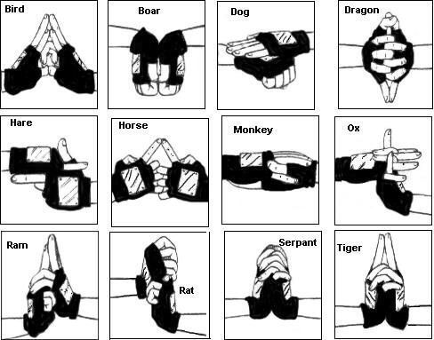

|
Jutsu, or skills/techniques, are the mystical arts a ninja will utilize in battle.
To use a jutsu, the ninja will need to use his chakra. Chakra comes from two places.
the body energy inherent in your trillions of cells and the mental & spiritual energy gained from exercise and experience.
To perform a jutsu, the ninja will bring out and release these two energies.
By forming handseals, the ninja is able manifest the desired jutsu.
Because of the extensive number of hand seals and different combinations,
there are thousands of potential jutsu to be discovered.
|
 |
Based on which jutsu the ninja uses, the type and amount of chakra will be different as would the elements you would be to employ.
The five main elemental styles are also the five names for the Five Great Shinobi Countries:
Fire, Wind, Lightning, Earth and Water. Each ninja has the potential to better utilize one of these styles and potentially more.
A special elemental detecting paper is used to determine ones type. The paper comes from trees which are specially grown with chakra.
When the ninja imbues the paper with a portion of their chakra, the paper will alter to reveal one's type.
The paper will rip in two for Wind, burn for Fire, become wet for Water, fall apart for Earth and crumple for Lightning.
For example Kakashi is a predisposed Lightning type, while Sasuke is both Lightning and Fire for the Uchiha clan specialty.
|